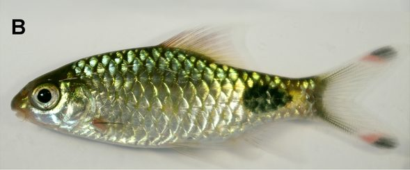

सिधरीPool Barb
Puntius sophore · Cyprinidae · FSH-0015

- Scientific name
- Puntius sophore (Hamilton, 1822)
- Family
- Cyprinidae
- Hindi
- सिधरी
- Status here
- native
- IUCN
- LC
When to look कब देखें
Present all year.
सिधरी / Pool Barb
Puntius sophore (Hamilton, 1822) — Cyprinidae
सिधरी (पूल बार्ब) — पूर्वी उत्तर प्रदेश के तालाबों, पोखरों, गड्ढों और धान के खेतों में पाई जाने वाली एक अत्यंत छोटी, फुर्तीला और सबसे आम मीठे पानी की निवासी मछली है। गाँव के बच्चे और महिलाएँ इसे अक्सर सूती कपड़ों या छोटे हाथ के जालों (hand nets) से पकड़ते हैं। इसका शरीर चपटा, चांदी जैसा चमकदार (silvery-gold) होता है। इसकी सबसे बड़ी पहचान इसके पूंछ के जोड़ (caudal peduncle) के पास पाया जाने वाला एक स्पष्ट गोल काला धब्बा (black spot) और इसके पीठ के पंख (dorsal fin) के आधार पर मौजूद एक दूसरा काला धब्बा है। यह मछली केवल 8-9 सेंटीमीटर तक बढ़ती है और स्थिर पानी में मच्छरों के लार्वा और जलीय शैवाल को खाकर तालाबों के संतुलन को बनाए रखती है।
Quick Identification त्वरित पहचान
| Feature | Description |
|---|---|
| Size | Very small fish (typically 5.0–8.5 cm total length); weight 3–10 g |
| Colouration | Silvery-green on the back, bright silvery-white or golden-yellow on the flanks |
| Tail Spot | A distinct, round black spot on the lateral line near the base of the tail fin |
| Dorsal Spot | A second dark spot at the base of the middle rays of the dorsal fin |
| Barbels | Absent; lacks any whiskers around the mouth |
| Fins | Dorsal fin has a strong, smooth, non-serrated spine |
Field tip: Look in shallow village ponds or flooded ditches. It is the most common small silvery fish with a black spot on its tail. During the breeding season, males develop a beautiful crimson-red stripe along the middle of their sides.
Morphology आकारिकी
Biometrics (typical measurements for adult specimens in local village water bodies):
| Measurement | Range |
|---|---|
| Standard length (SL) | 40–70 mm |
| Total length (TL) | 50–85 mm |
| Weight | 3–10 g |
Body structure: The body is relatively deep, moderately elongated, and laterally compressed. The head is small, with a short, rounded snout. The mouth is terminal and lacks barbels. The scales are large, cycloid, and shining, with 22–27 scales along the lateral line. The dorsal fin is situated midway on the body, containing 3 spines (the third spine is smooth and non-serrated) and 8–9 soft rays. The caudal fin is deeply forked.
Color details: Earthy-grey or greenish-brown dorsally, fading to bright silver or yellowish-silver on the belly. A prominent, round black spot is present on the 22nd to 24th scales of the lateral line. A second black spot is situated at the base of the dorsal fin rays. During the monsoon spawning season, a bright red or pink horizontal band runs along the lateral line of both sexes, but is much more vivid in males.
Behaviour & Ecology व्यवहार और पारिस्थितिकी
Shoaling surface swimmer.
- Social shoaling: Live in large, active schools (shoals) containing dozens of individuals, swimming rapidly in the middle and upper layers of shallow waters.
- Hypoxia tolerance: Highly tolerant of low oxygen levels, enabling them to survive in warm, stagnant, muddy agricultural channels and seasonal puddles.
- Rapid flight: Very agile, jumping out of the water surface when chased by larger fish or when startled by human shadows.
Ecological Role पारिस्थितिक भूमिका
Primary consumer and food chain pillar.
- Algae consumer: Feed on microscopic green algae and diatoms covering water plants, preventing weed overgrowth.
- Key prey base: Serve as one of the most important prey items in Gangetic wetlands. Almost all predatory fish, water snakes, kingfishers, herons, and egrets rely heavily on Pool Barbs for their diet.
Life Cycle / Phenology जीवन चक्र
- Breeding season: June to August, matching the heavy monsoon rains and flooding of fields.
- Spawning migration: Shoals migrate into shallow water logged grasslands and paddy fields, where fresh rainwater stimulates spawning.
- Egg laying: The female lays up to 2,000 small, adhesive, yellowish eggs that attach to submerged grass blades.
- Incubation: Eggs hatch in 20–24 hours. The young grow very quickly and reach adult size within 4–5 months, often spawning in their first year of life.
Host Plants or Prey आहार
Primary food items:
- Algae: Filamentous algae, green diatoms, and organic detritus.
- Insects: Mosquito larvae (wrigglers), midges, and small aquatic worms.
- Plankton: Tiny water fleas (Daphnia, Cyclops).
Predators / Natural Enemies शत्रु
- Fish: Predators like the Stinging Catfish [FSH-0011 Stinging Catfish] and young snakeheads.
- Birds: Egrets (like [BRD-0030 Little Egret]), Pond Herons (like [BRD-0004 Indian Pond Heron]), and kingfishers (like [BRD-0031 White-throated Kingfisher]).
- Reptiles: Checkered Keelback water snakes (Xenochrophis).
Agricultural / Human Relevance कृषि प्रासंगिकता
Rural food security and mosquito control.
- Biological pest control: Serve as a natural vector control agent in rural Basti. By consuming mosquito larvae in paddy fields and roadside ditches, they help limit mosquito breeding near homes.
- Local food resource: Eaten widely across eastern UP. They are caught by villagers using simple sheets or bamboo traps (hawa). Due to their abundance and low price, they are a primary source of animal protein for poor farming families, typically fried whole or cooked into a dry fish dish (potiah chokha).
Expected Locally स्थानीय रूप से अपेक्षित
Not a field record. Written from published accounts for eastern Uttar Pradesh. No confirmed local sighting yet — if you have seen it, that is what the atlas needs.
अभी तक स्थानीय पुष्टि नहीं। यह विवरण प्रकाशित स्रोतों से है, किसी अवलोकन से नहीं।
Extremely common in all agricultural blocks of Basti district (such as Harraiya, Kaptanganj, and Basti Sadar). During the monsoon, they can be seen swimming in the shallow water flowing over village roads and pathways. They are frequently sold in small piles in local weekly markets (haat).
Distribution वितरण
Global range: Widespread across the Indian Subcontinent, including Pakistan, India, Nepal, Bangladesh, Sri Lanka, and Myanmar.
In India: Found throughout the freshwaters of the plains and lower hills.
In Uttar Pradesh: Abundant in all major river basins, canals, wetlands, and seasonal agricultural fields.
In Basti district / eastern UP: Found in every village pond, roadside ditch, and waterlogged paddy field.
Research Questions शोध प्रश्न
Anyone can investigate these | कोई भी इन प्रश्नों की जाँच कर सकता है
- How does the breeding coloration (red stripe) of male Pool Barbs affect their selection by female barbs vs. visibility to predatory herons? — Observe mating choices and bird attacks on coloured models.
- What is the density of Pool Barbs in organic paddy fields compared to fields using chemical insecticides? — Conduct sweep-net sampling in different fields.
- What is the daily feeding capacity of a Pool Barb on malaria-carrying Anopheles mosquito larvae? — Perform feeding rate experiments in aquariums.
- How do Pool Barbs survive in drying muddy channels when water levels fall below 2 cm? / पानी का स्तर 2 सेमी से कम होने पर सिधरी मछली सूखते हुए कीचड़ वाले नालों में कैसे जीवित रहती है? — Monitor survival in shallow mud pools.
- Does the introduction of exotic Tilapia fish in village ponds reduce the population of native Pool Barbs? / तालाबों में विदेशी तिलापिया मछली डालने से क्या हमारी देसी सिधरी की संख्या कम होती है? — Compare barb counts in ponds with and without Tilapia.
Similar Species मिलती-जुलती प्रजातियाँ
| Species | Key Difference | हिंदी |
|---|---|---|
| Puntius ticto (Ticto Barb / Two-spot Barb) | Two spots: one small spot near the pectoral fin and one near the tail; scales are smaller; dorsal spine is serrated | सिधरी (टिक्टो) — दो काले धब्बे, कांटेदार पंख |
| Pethia conchonius (Rosy Barb) | A single large, dark spot near the tail; body is deeper; males turn deep rosy-red during breeding; lacks dorsal spot | पोथिया — गहरा गोल धब्बा, गुलाबी रंग |
| [FSH-0012 Elongate Glassy Perchlet] (Chanda nama) | Transparent body showing bones; lacks scales and tail spots; oblique mouth | चंदा — पारदर्शी शरीर, नुकीली पीठ |
Field rule: Small size (under 9 cm), silvery body, absence of whiskers, a smooth dorsal spine, a black spot at the base of the tail, and a second black spot on the dorsal fin identify the Pool Barb.
Taxonomy & Classification वर्गीकरण
Original description. Francis Hamilton described the Pool Barb as Cyprinus sophore in 1822 in his work An Account of the Fishes found in the river Ganges and its branches (pp. 310, 389). The type locality was the ponds and rivers of Bengal. The genus name Puntius is derived from the local Bengali word Punti or Pungti used for small carps. The specific name sophore is a local Bengali name for this fish.
Subspecies. Monotypic — no subspecies are currently recognised.
Family and order placement. Placed in the order Cypriniformes, family Cyprinidae.
Phylogenetic notes. Puntius sophore is the type species of the genus Puntius, representing a highly successful evolutionary lineage of small-bodied cyprinids adapted to ephemeral freshwater pools in monsoonal Asia.
IUCN status rationale. Listed as Least Concern (LC) due to its vast geographic range, high abundance, tolerance of agricultural runoff, and lack of significant conservation threats.
Photo Gallery फोटो गैलरी
References संदर्भ
- Hamilton, F. (1822). An Account of the Fishes found in the river Ganges and its branches. Archibald Constable & Co., Edinburgh, pp. 310, 389. [original description]
- Talwar, P. K. & Jhingran, A. G. (1991). Inland Fishes of India and Adjacent Countries. Vol. 1. Oxford & IBH Publishing Co., New Delhi.
- Jayaram, K. C. (2010). The Freshwater Fishes of the Indian Region. 2nd ed. Narendra Publishing House, Delhi.
- Pethiyagoda, R. et al. (2012). Systematics of Sri Lankan and Western Indian small barbs (Teleostei: Cyprinidae: Puntius). Ichthyological Exploration of Freshwaters, 23(1), 69-95.
- IUCN SSC Freshwater Fish Specialist Group (2024). Puntius sophore. IUCN Red List of Threatened Species. Ver. 2024.
- GBIF Occurrence Data — Puntius sophore, Uttar Pradesh (2010–2025).
Source file: species/fauna/fish/pool_barb.md